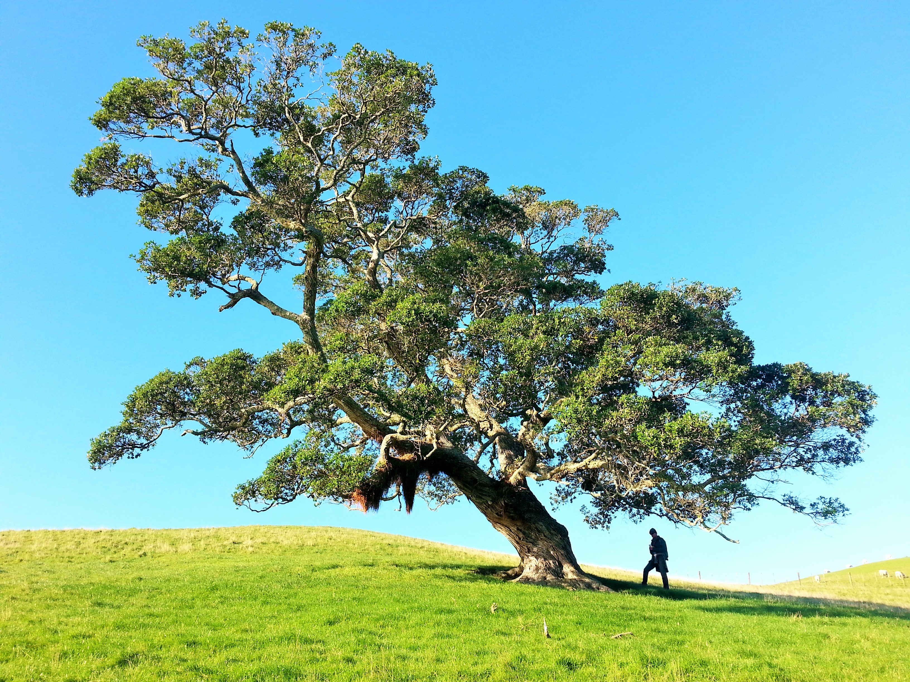

The Leaning Tree

The tree pictured above is a unique and beautiful one. The most obvious and first impression of many is how far it leans to the side, nearly 45º. It appears to be the only tree within a large field, making it stand out even more. This tree is very large, yet only providing shade to and being admired by one man. The sky behind the tree is blue with no signs of rain or clouds.